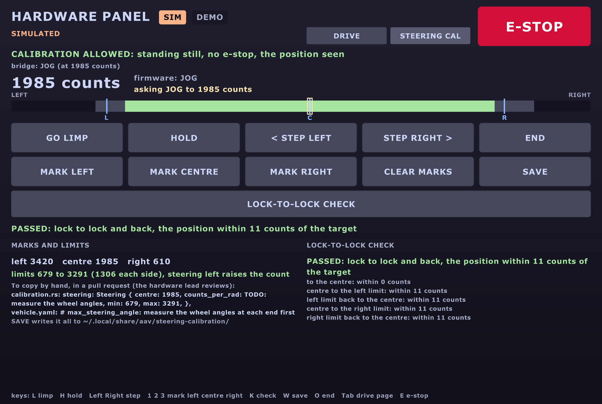

One script runs the stage-3 and stage-4 tests of tests.md: it drives the car,
logs what happened, and prints the numbers for vehicle.yaml. Built and proven in Gazebo
(15 Oct); the same script runs on the car.
The short version
pixi run actuator-test --listshows the tests. Add--simfor Gazebo.- On the car: stage 3 on stands (
--stands), stage 4 in an empty lot. It asks you to type the test's name first, and never goes above 1 m/s (0.3 on stands). - To stop: Ctrl-C, the e-stop, or the joystick's deadman. Any of them, any time.
- It prints the
vehicle.yamllines to paste. It never writes the file itself.
How it fits
actuator_test ──/drivers/tests/cmd_vel──► twist_mux ──► ego ──► backend ──► the car
(priority 60) ▲ (or Gazebo)
joystick 100, RC 95, keyboard 90 ─────────────┘ always win
│
└── reads back: /vehicle/odom (speed), /vehicle/steering, /throttle, /brake,
the IMU, /localization/odom/local, GPS, /safety/estop, /system/sourceIt's a driver like any other (Build a driver), in twist_mux's tests
slot: below every person (joystick, RC, keyboard), above Nav2 and every other program.
The tests
| Test | # | Where | What it does | Gives (vehicle.yaml) |
|---|---|---|---|---|
steer-sweep |
3.10 | stands | steps full left → centre → full right and back, 2.5 s each | angle per command; max_steering_angle, steer_offset |
steer-rate |
3.11 | stands | centre → full lock → centre, each way | steer_rate, steer_lag |
steer-centre |
3.12 | stands | straight, then tiny steps (0.002 rad) each way | steer_offset, steer_deadband |
speed-up |
4.1 | lot | from still to the speed cap | time to 0.5, 1, 2, 3 m/s; g (wheels and IMU); max_accel, throttle_lag |
coast |
4.2 | lot | to 2 m/s, then neither throttle nor brake | drag |
brake |
4.3 | lot | to 1, 2, 3 m/s (up to the cap), then stop | stopping distance, g; max_brake, brake_lag |
throttle-map |
4.4 | lot | speed-ups to ¼, ½, ¾ and all of the cap | throttle % → acceleration; throttle_deadband |
circles |
4.5, 4.6 | lot | one full circle per angle, both ways, at 1 m/s | real wheel angle per command; tightest circle |
straight |
4.7 | lot | 10 m at 0.5 m/s, steering straight | sideways drift; steer_offset |
actuator-test preflight --stands |
3.P | stands | speed up, hold, slow, brake; steer left, right, centre; every sensor counted | PASS / FAIL per line, no vehicle.yaml lines (below) |
The steering tests creep at 0.2 m/s: ego only turns the wheels while the car moves. On stands the wheels spin slowly; in Gazebo the car crawls in arcs.
In Gazebo
pixi run sim world:=empty gui:=false rviz:=false nav:=false sim_speed:=3 # terminal 1
pixi run actuator-test speed-up --sim # terminal 2sim_speed:=3lets ego go to 3 m/s, sospeed-upandbrakereach 2 and 3 m/s.--simkeeps ROS on this computer and uses Gazebo's clock. The script refuses to run without it when Gazebo announces SIM, and with it when anything announces REAL.nav:=false: nothing else drives. The empty world has room for the circles.
On the car
The task is not --local, so it reaches the car's computers. Run it from the laptop
on the car's network, with the car's stack running (pixi run car ...).
Stage 3: on stands
pixi run actuator-test steer-sweep --stands
pixi run actuator-test steer-rate --stands
pixi run actuator-test steer-centre --stands- The script prints the checklist from
tests.mdstage 3. Check it out loud. - Type the test's name to start. Anything else cancels; nothing moves.
- No steering sensor yet? (The 2025-26 ESP32 reports none: team-todo.md B6.) At each
measuring point the car stops and asks for the angle in degrees: read it with a
protractor or a phone app on the wheel.
steer-ratethen needs a video instead.
Stage 4: in an empty lot
pixi run actuator-test speed-up
pixi run actuator-test coast
pixi run actuator-test brake --speeds 0.5 1.0
pixi run actuator-test circles --angles 0.25 0.5
pixi run actuator-test straightRun coast first: the throttle fit uses vehicle.yaml's drag. Then paste the drag in,
then run the rest. Start at walking pace: --max-speed 0.5.
The safety layers
| Layer | What it does |
|---|---|
| Typing the test's name | on the real car (or when nobody announces /system/source), nothing moves until you type it. No keyboard (a script, a pipe): refused |
| Speed cap | 1 m/s on the car, 0.3 m/s on stands; --max-speed can lower it, never raise it there |
| ego must answer | on the car, no answer from ego (its speed cap and steering limits): refused. In Gazebo, a warning |
| Stage check | on the car, stage-3 tests need --stands, stage-4 tests refuse it |
| Envelope | each test has a speed, distance and time limit (printed at the start): crossing one stops the car |
| Ctrl-C, errors | zero commands until the car stands still, then it exits. A second Ctrl-C can't cut that short |
/safety/estop |
stops the test at once (twist_mux's lock and the backend brake too) |
| Someone takes over | the joystick or keyboard outranks the test in twist_mux; the script sees it and stops |
| Stale speed | no /vehicle/odom for 0.5 s: stop |
| Nothing through twist_mux | 2 s with no /control/cmd_vel: stop (a lock, or a mux without the tests slot) |
| A speed nobody sees | told to drive, but under 0.05 m/s measured for 4 s: stop (4, not 2: a Hall sensor with 8 clicks a turn says nothing until 2 clicks, about 0.24 m, which a slow start takes 2-3 s to roll; seen on the bench, 29 Oct). On stands the front wheel sensors read 0 while the rear (driven) wheels spin (TODO 49b), so the speed cap can't work |
| A runaway | the speed rises 0.1 m/s in 1 s while the command falls or sits at 0 (a stuck throttle): stop |
| A cut-short run | still saves its log and table, but prints no vehicle.yaml lines |
ego's steering rate
steer-rate lifts ego's max_steering_rate (0.6 rad/s) to 3 rad/s while it runs, so it
times the motor, not ego, and puts it back after. ego allows a live change to that one
limit only. If the script is killed (not Ctrl-C), restart ego to be sure.
What the car can measure today
The 2025-26 ESP32 drives the car until the spine replaces it (legacy_uart_bridge).
| Measurement | Today (ESP32) | With the spine |
|---|---|---|
| Speed | ✅ the front wheel sensors (the hardware lead's Arduino on CAN, spine_bridge role:=sensors), /vehicle/odom |
✅ |
| IMU g, yaw rate | ✅ once the IMU runs | ✅ |
| Pose (circles, straight) | ✅ the local EKF; GPS logged too | ✅ |
| Steering angle | ❌ no sensor: type it in on stands (✅ with the uplink, once H9 says yes, if the Jrk has feedback) | ✅ /vehicle/steering |
| Throttle and brake levels | ❌ not reported: no max_accel or max_brake fit, only the g figures. A speed command is the throttle there: speed ÷ full_throttle_speed (legacy_protocol.py). ✅ with the uplink (H9) |
✅ /vehicle/throttle, /vehicle/brake |
| Coasting | ❌ a low speed command still pushes, and 0 brakes | ✅ inside the speed loop's coast band |
| A fixed brake % (4.3 as written) | ❌ no brake command exists: the tests brake with a normal stop | ❌ the same |
What each fit can still give, with what is missing:
| Missing | The fit falls back to | Gives |
|---|---|---|
| Throttle level (ESP32) | ego's speed ÷ full_throttle_speed → wheel speed |
max_accel; the delay only if the pulses resolve it |
| Brake level | brake demand → IMU deceleration | max_brake, brake_lag, brake_dead_time |
| Brake level and demand | "stop asked for" → IMU deceleration | the whole stop's dead time and lag; no vehicle.yaml line |
| Fine wheel speed (Hall pulses) | each speed compared with the model's mean since the last pulse | the gain; a delay under 2 pulse intervals is refused |
Find the steering actuator's ends and centre
Why: the car steers to the right. Its centre is a guess, and the 2025-26 C++ disagrees
with itself: centre 1950 and range 400-3500 in setSteer(), but centre 500 and range
0-1550 in hardware_configs.h; it also steers with two gains (1950 counts a unit one
side, 1550 the other). Our Rust firmware copied 1950 / 400-3500 / 3100 counts a radian
(calibration.rs, TODO(Q1), TODO(Q2)). Nobody has measured the real ends.
Gives: the centre, equal limits each side of it, the counts a radian, and
max_steering_angle. Test 3.0 in tests.md: do it
before 3.10. 3.10 then runs only inside the measured ends: both ends outside today's
software limits (400-3500), or the measured ends flashed in calibration.rs first
(car day, A6).
Before any sweep
- The car on stands, all four wheels off the ground, the e-stop in someone's hand.
- The steering actuator's current limit set low first (its Jrk's settings, in Pololu's utility), so a wrong target pushes gently against the stop. The value is the hardware lead's: ______ (write it here and on the sheet).
- The steering actuator's own (Jrk) limits are the last line of defence. They are the hardware lead's to set. Our software limits come first; they don't replace them.
- Hands clear of the wheels and the linkage while the motor is on.
Counts: the unit here
A position or a target is a number of counts, 0 to 4095: the steering actuator's feedback (its Jrk's "scaled feedback"), in the same units as its targets. Not radians: radians are worked out from this calibration.
full left centre full right
(left end) (wheels straight) (right end)
|---- travel left ----|---- travel right ----|
|-- half --|-- half --| half = smaller travel - 5 %
lo centre hi the limits: the same each sideTwo ways
| Way A: car day, whatever firmware is on the ESP32 | Way B: later, the Rust firmware with the uplink and the hardware panel | |
|---|---|---|
| Needs | a laptop with Pololu's free Jrk G2 configuration utility, a USB cable to the steering actuator's Jrk | the Rust ESP32 firmware with uplink (session 6), the uplink's wire (H9), the Jrk's feedback mode set to analog |
| Reads | the utility's Status tab: feedback, scaled feedback, target | /vehicle/steering_actuator/raw (counts), in the panel |
| Moves the wheels | by hand, the motor stopped | buttons: small jog steps; or by hand: limp (motor off) |
| Who | the hardware lead, or someone they show | the laptop person, with the hardware lead there |
Way A: Pololu's utility over USB (car day)
| # | Do | Write down |
|---|---|---|
| A1 | The car off. USB from the laptop to the steering actuator's Jrk. Open the utility; it finds the Jrk | its serial number |
| A2 | Save its settings first, as a backup: File, then Save settings file. Name it steering-jrk-<date>.txt; keep it with the car's files (not in git if it holds anything private) |
the file's name |
| A3 | Read its feedback mode (Feedback tab): it must be Analog. Not analog: there is no position to read; stop, tell the hardware lead | the mode |
| A4 | With the hardware lead: the current limit low (Motor tab), applied | the old and new values |
| A5 | The ESP32 sends a steering target all the time, so the motor won't stay off. Power everything off first. Then, with the hardware lead, stop it reaching the Jrk: the ESP32 left off, or its I2C unplugged with the power still off (never with it on). Power the Jrk back, then press Stop motor in the utility | how |
| A6 | Turn the wheels by hand, gently, to full left (the steering stops, not the tyre on the frame). Read Scaled feedback | left end |
| A7 | Wheels straight (a straight edge on both front wheels, or a string line to the rear wheels). Read it | centre |
| A8 | Full right. Read it | right end |
| A9 | At each end, the wheel angle with a protractor (both front wheels; write the mean) | angles |
| A10 | The Jrk's own limits: change them only with the hardware lead. Otherwise leave everything as it was: load the backup (File, Open settings file) if anything changed | what changed |
Menu and tab names are from Pololu's user's guide; the version on the laptop may name them a little differently.
Way B: the hardware panel (Rust firmware)
Not on car day. Car day runs link version 2 throughout
(one link version on the car). Way B comes later,
once the Rust firmware with the uplink is flashed and H9 says the wire is there. Then the
Motor Pi's legacy.yaml, for this session only, with the hardware lead's say-so:
frame_version: 3
uplink: true
steering_calibration: stands # back to none afterwardsThen, on the laptop (on the car's network, the car's ROS_DOMAIN_ID; mac.md),
the hardware panel's STEERING CAL page (Tab):
pixi run tools/ros.sh ros2 launch aav_hud hw_panel.launch.py # then TabNot pixi run hw-panel: it is localhost-only, so it never sees the car. The page:
hud.md.

| # | Do (button, key) | Expect |
|---|---|---|
| B1 | Nothing driving; the brake on. Open the page | ALLOWED; the bridge's line says OFF; the position in counts |
| B2 | By hand: GO LIMP (L) | firmware LIMP; the motor off; the counts follow the wheels |
| B3 | Full left: MARK LEFT (1). Straight: MARK CENTRE (2). Full right: MARK RIGHT (3) | the three marks; the limits and any warnings under them |
| B4 | Or with the motor: HOLD (H), then STEP LEFT / STEP RIGHT (Left, Right), 25 counts a press, a few seconds apart | the wheels move slowly (300 counts a second at most) |
| B5 | Stop a step before the steering binds or the motor strains; MARK that end | the end |
| B6 | The same toward the other end, and back to straight, MARK CENTRE | |
| B7 | HOLD near the centre, then LOCK-TO-LOCK CHECK (K) | centre to the left limit and back, to the right limit and back, at 100 counts a second; PASSED, or STOPPED and why, holding where the wheels are |
| B8 | SAVE (W) | the file's path on screen and in the log (below) |
| B9 | END (O) | RETURN, then OFF: the wheels go back slowly to the steering asked for |
The check stops (and holds) when the position falls 150 counts behind the target, stops moving for 0.6 s while the target moves, misses a leg's end, is lost, or the firmware stops jogging. A stop near an end: mark that end again, a little inside; then check again.
Where the result goes. SAVE writes
~/.local/share/aav/steering-calibration/steering-<UTC time>.txt: the marks, the check's
result, and the lines for calibration.rs and vehicle.yaml. The panel never writes
either file: copy them by hand, as below, with the sheet. For max_steering_angle, add
the wheel angles with the steering_limits command (the file has it, filled in).
Without the panel, from any laptop on the car's network:
ros2 topic echo /vehicle/steering_actuator/raw # position: counts
ros2 topic echo /vehicle/steering_actuator/calibration # what it does, and why not
# limp (mode 1), sent at 10 Hz while it runs; Ctrl-C ends it within 0.5 s:
ros2 topic pub -r 10 /drivers/buttons/steering_calibration aav_interfaces/msg/SteeringCalibration "{mode: 1}"
# jog (mode 2) to a target, in counts:
ros2 topic pub -r 10 /drivers/buttons/steering_calibration aav_interfaces/msg/SteeringCalibration "{mode: 2, target: 2000}"Refused? The line says why: not braked, a speed asked for, an e-stop, the RC or a
test driving, no position (the Jrk's feedback isn't analog), or the bridge's own rules
(steering_calibration is none, no uplink, ego driving, the car moving).
A jog target never goes outside today's software limits (400-3500). If an end lies beyond them, use limp: the counts are read there all the same.
| What keeps it safe | Where |
|---|---|
| only standing still and braked; the throttle held at 0 throughout | the firmware (legacy-link SteerCal) and the bridge |
| jog clamped to the software limits, 300 counts a second | the firmware |
| leaving limp holds where the wheels are, then moves back slowly | the firmware |
| the Orin's heartbeat lost (100 ms): leave, and hold there | the firmware |
| the panel stops asking (0.5 s): leave | the bridge |
| the panel asks nothing with an e-stop, the car moving, or no position; its jog stays in 400-3500; its check stays inside the limits and stops on resistance | the panel (panel-core calibration, sweep) |
steering_calibration: none by default |
the bridge, legacy.yaml |
The sheet
Print it; fill it in at the car. One sheet a session.
| Left end | Centre | Right end | |
|---|---|---|---|
| Counts | __ | __ | __ |
| Wheel angle, left front (deg) | __ | 0 | __ |
| Wheel angle, right front (deg) | __ | 0 | __ |
| Wheel angle, the mean (deg) | __ | 0 | __ |
Worked out (steering_limits) |
Value |
|---|---|
| travel left, travel right (counts) | __ , __ |
| half = smaller travel - 5 % (counts) | __ |
| limits: lo, hi (counts) | __ , __ |
| counts a radian (sign: + if left raises the count) | __ |
max_steering_angle (rad) |
__ |
| warnings | ______ |
| date, way (A or B), who, the hardware lead | ______ |
ros2 run aav_legacy steering_limits --left <counts> --centre <counts> --right <counts> \
--left-deg <mean> --right-deg <mean>It prints the lines for firmware/spine/crates/spine-board/src/calibration.rs (Steering:
centre, counts a radian, min, max) and for vehicle.yaml (max_steering_angle). It flags
a centre far from the middle of the travel, a lopsided travel, feedback that doesn't change
or is clipped at 0 or 4095, and two sides whose gains differ. A person puts them in, in a
pull request, with the sheet's photo; the hardware lead reviews it.
The preflight on stands
One run before the car goes on the ground (Ben, 29 Oct; the design:
docs/designs/2026-10-29_preflight.md). It drives and checks every sensor at once.
pixi run actuator-test preflight --stands --sim # Gazebo (pixi run sim first)
pixi run actuator-test preflight --stands --bench # bench mode (pixi run bench first)
pixi run actuator-test preflight --stands --no-drive --skip steering # the car today: the sensors only
pixi run actuator-test preflight --stands --skip steering gps lidar # the car, once it has a rear-wheel speed| Step | Command |
|---|---|
| still, settle 3 s | 0 (the IMU's bias, the GPS's start) |
| speed up, hold 5 s | 0.3 m/s |
| slow down 3 s | 0.15 m/s |
| brake | 0, until still |
| steer left, right, centre | 3 s each, creeping at 0.2 m/s |
Then one line per check: PASS, FAIL, WARN or SKIP.
| Lines | PASS when |
|---|---|
| one per sensor | at least 0.8 x its documented rate (IMU 200 Hz, wheels 100, GPS 1, lidar and radar 10, camera 15), no gap over 5 messages, values in range (gravity 9.81 ± 0.5 at rest) |
| speeds up, holds, slows, brakes | 80% of the cap; within 25% in the hold (the open-loop ESP32: a WARN with its throttle gain); still within 5 s |
| steers | left and right measured, centre within steer_offset ± (2 x steer_deadband + 0.02 rad); no sensor: it asks you |
| stands: IMU still | its speed change while speeding up under 0.4 x the wheels' |
| stands: GPS still | Doppler under 0.1 m/s; with no Doppler only a WARN |
On the car, the drive is refused today
The car is rear-wheel drive; its wheel sensors are on the front. On stands
/vehicle/odom reads 0 while the motor spins, so no speed cap can work
(TODO 49b). Until vehicle.yaml's speed_wheels says rear, run
--no-drive: the sensors only, nothing moves. Also refused: the C++ ESP32 (its
no-timeout lock), and the bridge on speed_loop.mode pi.
In Gazebo and on the bench the car is on the ground, so the stands lines check the
opposite (the IMU and GPS agree with the wheels) and say so. Who must be there on the car:
the e-stop person (they are the stop), someone watching the rear wheels with a
tachometer app, the laptop person; run it on the Orin (ssh + tmux) or a wired laptop.
The word to type: preflight. If the car is still moving 5 s after the stop, it prints
NOT STOPPED: E-STOP NOW and sets /safety/estop.
Tested, 29 Oct
| Where | Result |
|---|---|
Gazebo, empty world (--sim --skip camera radar battery) |
every drive and sensor line PASS: 0.34 m/s held for 0.30, still 0.5 s after the brake, steering +0.50 / -0.50 / 0.000 rad, IMU 0.25 vs wheels 0.25 m/s, Doppler 0.36 vs 0.34. Lidar FAIL: the empty world has none (name it with --skip lidar) |
Bench (--bench), spine armed |
every sensor line PASS (IMU 50 Hz, |a| 9.78; GPS 5 Hz; camera 640x360 10 Hz; battery 50.9 V). The drive stopped itself: the front wheels read 0 for over 2 s of a slow start (8 Hall clicks a turn), so the "speed nobody sees" stop, then at 2 s, fired; now 4 s. The run again at 4 s: not yet done |
--no-drive, the real car |
untested: no car |
Trusting the fits
Each lag fit is now a dead time, then a lag (FOPDT). The old fit (a lag alone) stays beside it, so you can compare.
command ──► wait (dead time) ──► first-order lag (τ) ──► measured| Rule | What it means |
|---|---|
| The path is named | each row and each vehicle.yaml line says from which signal to which: e.g. throttle level -> wheel speed, never cmd_vel -> speed (that would measure ego's ramp and the speed loop too) |
| The rms is printed | with each fit, in the signal's units; the old fit's rms beside it |
| True times | the fits use each message's arrival time (t_* columns), not the 50 Hz copies |
| A dead time counts | only if it is longer than the resolution, and fits at least 1.1 × better than a lag alone |
| Refused, with a reason | a lag shorter than the data can resolve gets no vehicle.yaml line, and a NOTE says why |
The resolution is two fresh values (Nyquist), plus what noise blurs:
resolution = 2 × (time between fresh values) + rms ÷ (slope × √moving samples)| Signal | Fresh values every | Resolution |
|---|---|---|
| a level at 50 Hz | 0.02 s | 0.04 s |
| Hall wheel speed, 8 holes on a 0.30 m wheel, at 1 m/s | 0.118 m ÷ 1 m/s = 0.12 s | 0.24 s |
| ... at 0.5 m/s | 0.24 s | 0.47 s |
So at walking pace a 0.1 s throttle lag can't be read from the wheel speed: use the
throttle level, or the IMU. analysis.pulse_interval() works it out before a run.
Steering play is measured first (steer_play: where it settles after moves up and
moves down), then the lag is fitted with it. Left out, play looks like a longer lag.
Tested on pretend data (test/test_robustness.py) with play, Hall pulses, noise,
no brake level and known dead times:
| Case | Tolerance it meets |
|---|---|
| dead time + lag, from a level | 10 ms (40 ms with 5% noise) |
| steering with 0.02-0.04 rad play | rate 3%, play 3 mrad, lag 10 ms, dead time 25 ms |
| Hall pulses, up to 3 m/s | max_accel 2%; total delay 40 ms or 10% |
| Hall pulses, under 1 m/s | max_accel 5%; the 0.15 s delay refused |
| brake from the IMU only | max_brake 2%; lag and dead time 20 ms |
The speed loop's profile (TODO 27)
The spine's speed loop has two profiles (Tuning the speed
loop): default, today's gains (overshoots about
15%), and smooth (no overshoot on the model, robust to the throttle's 5x guess). The
firmware keeps default. Try smooth here, in this order:
| When | What to run | What you should see |
|---|---|---|
| Before the car | pixi run sim-check --speed-steps-only --speed-loop smooth |
each step ends within 5%, overshoot under 3% |
After 4.1, 4.2, 4.4 (max_accel, drag) |
pixi run python3 tools/vehicle_model.py --set max_accel=... --set drag=... --speed-loop |
smooth still 0% at K with the measured numbers; if not, redo its gains (pole placement, then b) |
| Stage 3, on stands, once the spine closes the loop (it has the wheel speed) | build the board with speed_loop: SpeedLoopConfig::smooth() in its SpineConfig; a held step (below) at 0.3 m/s |
the wheels reach 0.3 m/s without passing 0.31; /vehicle/throttle steady, no jitter |
| Stage 4, in the lot | the held step at 0.5 and 1.0 m/s, each profile, the same day | the peak speed in /vehicle/odom against the target; then pick one |
The held step is a scripted drive, 20 s at the target (the speed-up test stops 1 s after
reaching 95%: too soon to see the peak, which comes 5-7 s in):
ros2 action send_goal /scripted_drive aav_interfaces/action/ScriptedDrive \
"{target_speed: 0.5, acceleration: 1.0, deceleration: 1.0, hold_time: 20.0}" --feedbackToday's ESP32 has no closed speed loop
It drives the throttle open loop (speed ÷ full_throttle_speed), so neither profile
runs on the car until the spine gets the wheel speed. On stands the wheels carry no
load: the car is nearly a pure integrator there, the case where today's gains overshoot
most. The e-stop person watches.
What it saves
Each run gets a folder, ~/aav-tests/<date>-<time>-<test>[-sim]/ (--out or
$AAV_TESTS_DIR moves it):
| File | Holds |
|---|---|
log.csv |
50 rows a second: commands, speed, steering, throttle, brake, wheels, IMU, pose, GPS, ego's command; and each value's arrival time (t_speed, t_imu...) |
summary.txt |
the table and the vehicle.yaml lines, as printed |
meta.yaml |
the test, the source, the cap and envelope, ego's limits, vehicle.yaml then, the steps; and shaping: what shaped the commands |
bag/ |
with --bag: a rosbag of every topic it reads and sends |
pixi run actuator-test --analyse <folder> prints the report again from log.csv.
Older logs (no t_* columns, no shaping) still work: the fits use the rows' times.
shaping in meta.yaml:
| Key | Holds | When unknown |
|---|---|---|
backend |
legacy, spine, gazebo, gazebo-spine, bench |
unknown |
speed_loop |
the profile (default, smooth), or "none: open loop" on the ESP32 |
on the car's spine: built into the firmware, so write it down |
full_throttle_speed |
the legacy bridge's (its open loop) | unknown, or n/a |
ego, ego_changed |
ego's limits (its ramp is before the backend); what the test lifted | "ego did not answer" |
Proven in Gazebo (15 Oct)
world:=empty, sim_speed:=3, vehicle.yaml's guessed numbers in the actuator model.
The script should give them back:
| Number | vehicle.yaml |
Measured | Test |
|---|---|---|---|
max_accel |
1.5 m/s² | 1.496 | speed-up; 1.495 in throttle-map |
throttle_lag |
0.1 s | 0.100 | speed-up |
throttle_deadband |
0 | 0.113 ⚠️ | throttle-map: Gazebo's car starts rolling about 0.3 s after the model does |
drag |
0.1 /s | 0.100 | coast |
max_brake |
3.0 m/s² | 3.045 | brake |
brake_lag |
0.2 s | 0.200 | brake |
steer_rate |
0.8 rad/s | 0.817 | steer-rate |
steer_lag |
0.1 s | 0.105 | steer-rate |
steer_offset |
0 | 0.000 | steer-centre, steer-sweep, straight |
steer_deadband |
0.005 rad | 0.005 | steer-centre |
max_steering_angle |
0.5 rad | 0.495 | steer-sweep (the deadband leaves 0.005 short) |
| real angle, full-lock circle | 0.5 rad | 0.484 (was 0.433) | circles: fixed 15 Oct (below) |
| real angle at 0.2 / 0.35 rad | 0.2 / 0.35 | 0.196 / 0.341 | circles: yaw rate, odometry circle and GPS circle agree within 1% |
Other figures from the same runs: 0 → 3 m/s in 6.2 s; IMU and wheel-speed g agree (0.054 vs 0.056 g mean); stopping from 1.1 / 2.2 / 3.1 m/s took 1.05 / 2.57 / 4.46 m; drift over 10 m was 0.06 m; the full-lock circle was 6.8 m across, not 5.75 (6.0 m since the fix below).
Fixed: Gazebo's car now reaches full lock (S3, 15 Oct)
Told 0.5 rad, the car turned as if 0.433. The cause was Gazebo's Ackermann system
(gz-sim 8): it turns steering_limit into a smallest circle, wheelbase ÷ sin(limit),
so a limit of 0.5 stopped the middle wheel at 0.447. Tyre slip (about 3%) took the
rest. Now vehicle.gazebo_steering_limit gives Gazebo 0.578, worked out from
max_steering_angle. vehicle.yaml and the real car's meaning don't change.
circles --sim, 1 m/s |
Before | After |
|---|---|---|
| full lock, left / right | 0.433 | 0.485 / 0.484 rad (3% short) |
| 0.35 rad, left / right | 0.339 | 0.342 / 0.341 |
| 0.2 rad, left / right | 0.194 | 0.197 / 0.196 |
| circle across, full lock | 6.8 m | 5.93-5.98 m |
| Gazebo's wheels at full lock, inside / outside | 0.498 / 0.405 (worked out) | 0.563 / 0.449 (Ackermann: 0.563 / 0.449) |
The wheels now point exactly where Ackermann says. The last 3% is the tyres
sliding sideways, at every angle: the real car will slide too, and circles on the
car measures it. steer-sweep --sim still reads 0.495 (the deadband).
Gazebo's IMU
Gazebo's own IMU never felt the car speed up or brake (0.00 m/s² while speeding up at
0.6). gazebo_imu now gives it the car's acceleration (Simulation).
Checked in Gazebo and against a pretend real car (15 Oct)
| What was done | What happened |
|---|---|
Ctrl-C during speed-up, at about 1.5 m/s |
"STOPPING: Ctrl-C"; stood still, exited in 3.2 s |
/safety/estop true during speed-up |
"STOPPING: /safety/estop is true"; stood still |
The keyboard slot sends zeros during straight |
"someone else is driving"; stood still |
Gazebo, without --sim |
refused: add --sim |
| A pretend REAL announcer, no keyboard attached | checklist printed, then refused |
... a stage-3 test without --stands |
refused |
... --sim; --max-speed 1.5 |
refused; refused |
| ... typed "yes" | "Cancelled: nothing moved" |
| ... typed "speed-up", but no car | refused: no /vehicle/odom |
The code
| File | What |
|---|---|
ros/drivers/aav_actuator_tests/aav_actuator_tests/actuator_test.py |
the ROS node and the command line |
procedures.py |
each test's steps |
safety.py |
the rules: REAL or SIM, caps, envelope, confirmation |
analysis.py, reports.py |
the maths and the report: no ROS, unit-tested |
test/synthetic.py, test/test_robustness.py |
pretend data with play, Hall pulses, noise; the fits must give the numbers back or refuse |
test/fake_car.py |
ego's model + Gazebo's actuator model: the tests check each test gets the numbers back |
tools/actuator_test.sh |
the pixi task: --local only with --sim |